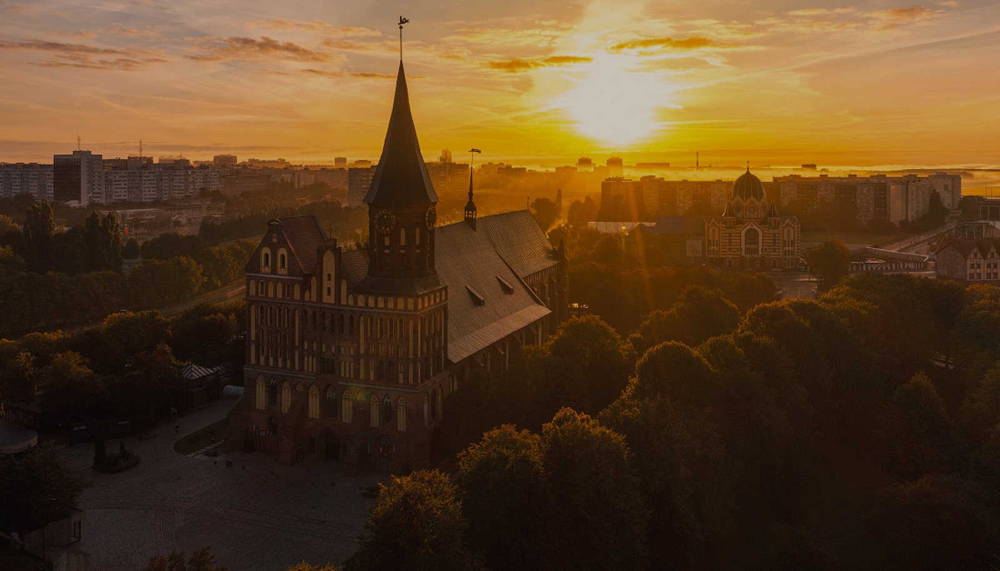
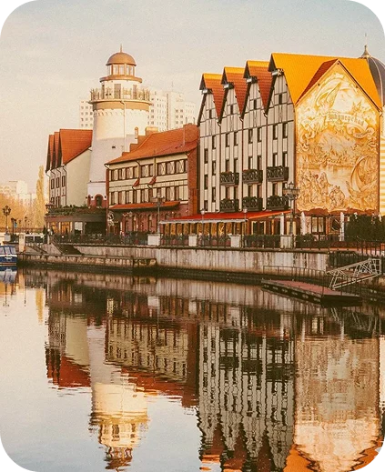
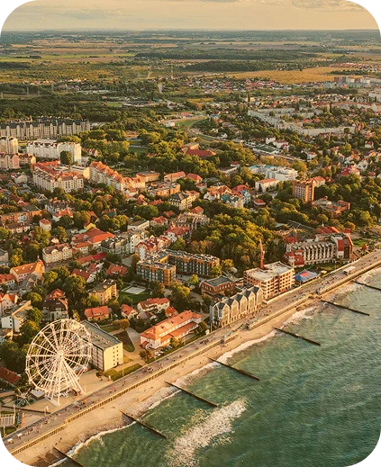
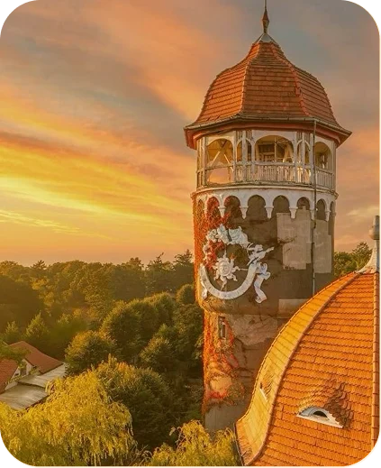
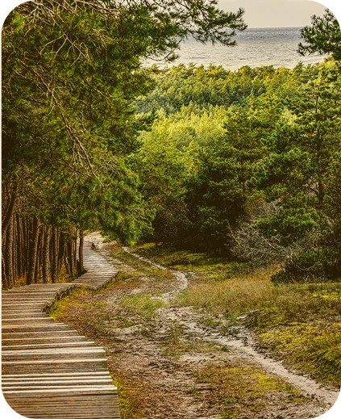
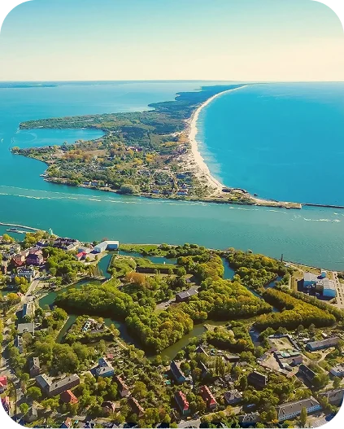
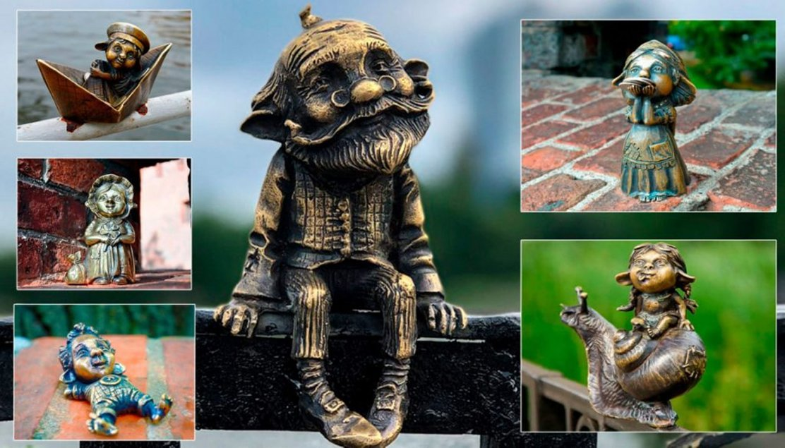

Маршруты, легенды и практические советы для вашей поездки
От камерного центра до самого западного города страны — область компактная, зато контрастная.

Город с многовековой историей — от Кёнигсберга до наших дней. Рыбная деревня, Кафедральный собор и музеи: он идеален для долгих прогулок.

Променад, коса и мягкий морской воздух. Идеальное место для прогулок у воды, фотосессий и отдыха в уютных кафе.

Тихие улочки в стиле межвоенного времени и колесо обозрения. Здесь хочется задержаться и дышать глубже.

Объект ЮНЕСКО: Танцующий лес и дюна Эфа. Поднимись по смотровой лестнице — и увидишь Балтику до горизонта.

Самый западный город России: маяк и широкий пляж. Здесь кажется, что город стоит у самого края карты.
Коротко о том, на чём построен путеводитель.
Калининград — это диалог старого и нового. Брусчатка и стекло, готика и советский модернизм. Каждый поворот улицы — кадр из фильма, который хочется пересматривать.
Это не список точек на карте — это готовые микро-путешествия. От прогулки по Рыбной деревне до поездки на Куршскую косу: в каждом маршруте — места, которые любят местные, и практичные подсказки: где перекусить и сколько заложить времени.
Нажмите на точку — подскажу, что успеть за день.
Калининград не терпит суеты. Здесь важно не количество посещённых точек, а качество мгновений: скрип песка на Куршской косе, аромат свежего марципана, тишина у стен Кафедрального собора.
Автобусы 2, 5, 21 и трамвай № 5 — до Рыбной деревни. Электричка — быстрый способ добраться до Зеленоградска и Светлогорска.
Музей янтаря и Ленинский проспект — бюджетные и популярные у местных маршруты.
Кёнигсбергские клопсы и марципан — гастрономические символы региона.
Лето — комфортно; осень и весна — ветрено; зима — скользко на мостах.
Удобная обувь — брусчатка и длинные прогулки. Дождевик и ветровка — погода переменчива.
Скачайте карту центра заранее — Wi-Fi есть не везде. Аудиогиды помогут узнать историю мест прямо на маршруте.
Квест-прогулка, которая превращает знакомство с городом в волшебную сказку.
Хомлины — маленькие хранители янтарного края. По легенде, они веками живут среди людей, мастерят украшения из солнечного камня и прячут свои домики в укромных уголках города. Название «хомлин» происходит от английского home — «дом»: их главная мечта — найти свой уголок в Калининграде.
В 2018 году художники Наталья Шевченко и скульптор Андрей Спечков отлили семью хомлинов в бронзе. Каждый — со своим характером и местом силы: кто-то любит мосты, кто-то — башни и парки. Маршрут проходит по главным достопримечательностям и превращает обычную прогулку в приключение.

Выберите сценарий — покажу точки на карте и сколько времени закладывать.
Выберите готовый сценарий или соберите свой: область компактная — успеется многое.
Построить маршрут